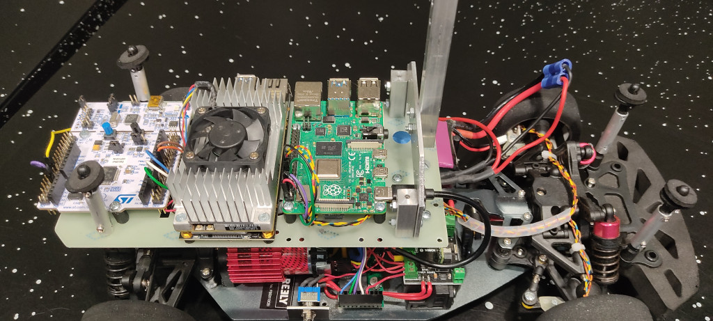
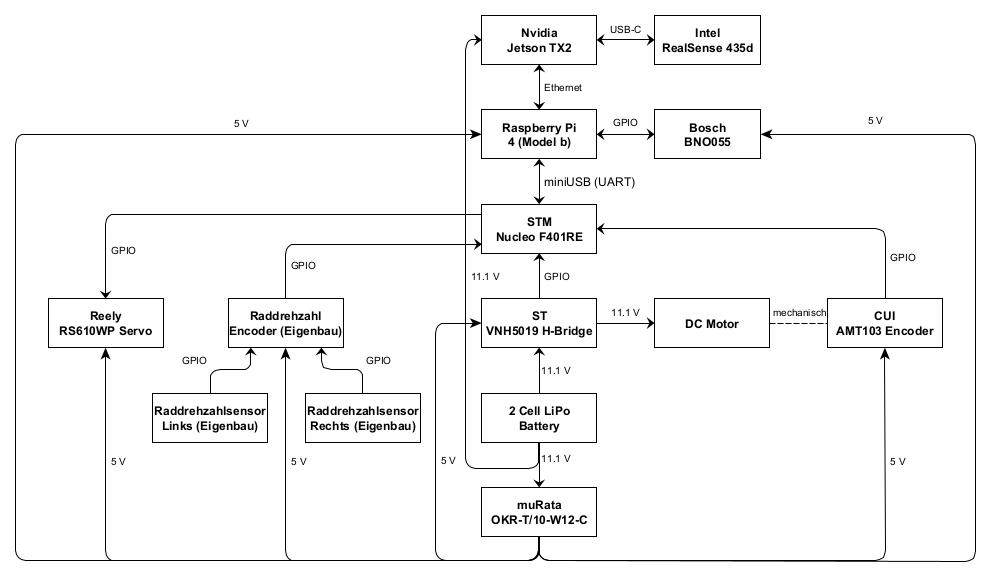
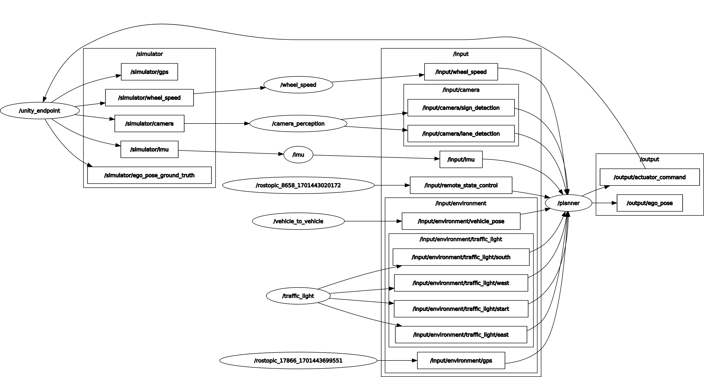

- Generated by
 1.9.1
1.9.1
|
Raspberry Pi Platform
v1.0
This is the documentation of the source code which is running on the Raspberry Pi 4 Model B, that is responsible for sensing, planning and acting of the vehicle.
|
The repository provides a comprehensive solution for autonomous vehicle perception and planning in the context of the Bosch Future Mobility Challenge (BFMC). It includes algorithms for lane detection, object detection, and behavior planning, which are essential for navigating a vehicle through a simulated environment or a physical track with various traffic scenarios.
The primary functions and features include:
The repository is designed to work with both a simulated environment provided by the BFMC simulator and a physical setup with actual sensors and actuators. It leverages ROS (Robot Operating System) for handling inter-process communication and provides a robust framework for developing and testing autonomous driving algorithms.

From left to right: STM Nucleo F401RE, Nvidia Jetson TX2, Raspberry Board Pi 4 Model B

Hardware setup of all components, the connection types and the underlying voltages of the components.
 Overview about the current ROS architecutre
Further information about the custom messages, e.g. the physical values of the messages that are referenced below with the prefix bfmc_interface, can be found here.
During real world application, input is provided by the sensors on the vehicle (camera, IMU, wheel speed sensor), V2X communication (traffic lights) from the servers on the race track, and an /input/remote_state_control which can be used to manually send a desired state to the vehicle.
During simulator application, input is provided by the simulator (camera, imu, wheelspeed, gps) and the ground truth of the ego pose is published to validate your algorithms.
| Topic | Msg-Type | Publisher | Subscriber |
|---|---|---|---|
/simulator/camera | bfmc_interface::SimulatedCamera | simulator | bfmc_input/src/camera_perception/Camera.cpp |
/simulator/imu | bfmc_interface::SimulatedIMU | simulator | bfmc_input/scripts/imu/imu_node.py |
/simulator/wheel_speed | bfmc_interface::SimulatedWheelSpeed | simulator | bfmc_input/src/wheel_speed/wheel_speed_node.cpp |
/simulator/gps | geometry_msgs/PointStamped | simulator | TBD |
/simulator/ego_pose_ground_truth | geometry_msgs/PoseStamped | simulator | None |
The output contains steering and speed commands sent to the Nucleo board via UART - also see hardware setup. Furthermore, the calculated localization information (x, y, yaw, nodeID) is published and stored in ROS bags for later analysis. And additionally, the vehicle shall send detected characters and objects to an environment server (live traffic) (currently not implemented).
| Topic | Msg-Type | Publisher | Subscriber |
|---|---|---|---|
/output/actuator_command | bfmc_interface::NucleoCommand | bfmc_action/src/planner/Command.cpp | bfmc_output/src/serial_handler/serial_handler_node.cpp |
/output/ego_pose | bfmc_interface::EgoPose | bfmc_action/src/planner/Environment.cpp | None |
Each catkin package (except bfmc_interface) contains a launch file to launch all its nodes. These nodes include (depending on the specific package) imu, wheel_speed, camera_perception_listener, serial_handler, and planner. The planner node has several parameters that can be set, such as the start state, the distance to travel, the default speed, the reduced speed, the parking speed, the highway speed, the current node ID, the destination node ID, the initial car pose and the timings for different scenarios. The main launch file to start all relevant car nodes is located inside the bfmc_interface package at Pi_Platform/src/bfmc_interface/launch/run_car_autonomous.launch. If you are using the simulator, use the provided Pi_Platform/src/bfmc_interface/launch/run_car_simulated.launch
There are additional launch files which are stored in Pi_Platform/src/bfmc_interface/launch/tests to test individual scenarios.
| Parameter | Unit | Datatype | Description |
|---|---|---|---|
startState | - | int | Desired state for starting the vehicle |
distanceToDrive | [m] | float | Distance when the vehicle enters the finish state |
speedDefault | [m/s] | float | Default speed for driving |
speedReduced | [m/s] | float | Reduced speed e.g. when approaching intersections, crosswalks |
speedParking | [m/s] | float | speed for parking maneuver |
speedHighWay | [m/s] | float | Increased speed when driving on the highway |
currentNodeID | - | int | Starting point (ID) for planning the route |
currentNodeID | - | int | End point (ID) for planning the route |
timings/startUp | [s] | double | Duration of the boot process of the vehicle |
timings/stop | [s] | double | Duration of the vehicle stop at stop signs |
timings/pedestrian | [s] | double | Maximum duration of stopping a vehicle when a pedestrian is detected on the road/crosswalk |
initialPoseX | [m] | float | Initial x coordinate of the vehicle on the map |
initialPoseY | [m] | float | Initial y coordinate of the vehicle on the map |
initialPoseYaw | [rad] | float | Initial yaw orientation of the vehicle (default - 270° vehicle faces north) |
| Unused | |||
raceMode | - | bool | Set raceMode |
As options for the parameter startState the implemented states of the vehicle are available, which are mapped as follows:
| State name | State ID |
|---|---|
START_UP | 0 |
FOLLOW_LANE | 1 |
INTERSECTION | 2 |
STOP | 3 |
CROSSWALK | 4 |
PARKING | 5 |
ROUTE_PLANNING | 6 |
PRIORITY_ROAD | 7 |
PEDESTRIAN | 8 |
SINGLE_ONE_WAY | 9 |
CHANGE | 10 |
TRAFFIC_LIGHT | 11 |
ROUNDABOUT | 12 |
FINISH | 31 |
| Software | Sourcecode | Information |
|---|---|---|
| Embedded Platform - Nucleo | Nucleo_Platform | Copy Nucleo_Platform/BUILD/Nucleo_mbedrobot.bin to Nucleo-Board via USB - further information: https://boschfuturemobility.com/embedded/ |
| TX2 Platform - Nvidia TX2 | Jetson_Platform/perception | Build code on Nvidia TX2 Jetson and run ./perception_process |
| ROS - Raspberry Pi | Pi_Platform | Build code on Raspberry Pi and run roslaunch run_car_autonomous.launch |
Build the software on the Nvidia Jetson TX2:
Build the ROS software on the Raspberry Pi:
Start up the vehicle: Caution: Process on TX2 Platform needs to be running before starting the ROS launch file otherwise the lane/object detection will not send any data to the Raspberry Pi.